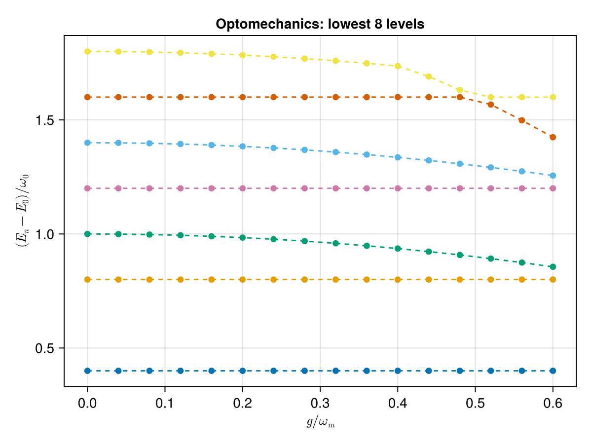

Cavity Optomechanics and the Polaron Transformation
A single optical cavity coupled to a mechanical oscillator by radiation pressure has the Hamiltonian
\[H = \omega_0\, a^\dagger a + \omega_m\, b^\dagger b + g\, a^\dagger a\,(b + b^\dagger),\]
where $a, a^\dagger$ are cavity (optical) ladder operators, $b, b^\dagger$ the mechanical mode, and $g$ the single-photon optomechanical coupling. Although $H$ is non-linear, it has a hidden structure: the cavity photon number $a^\dagger a$ commutes with everything in sight, so each photon-number sector sees the mechanical mode as a displaced harmonic oscillator. The polaron (Lang-Firsov) transformation makes this exact and yields an effective Kerr nonlinearity for the cavity.
The unitary that does the job is
\[U = \exp\!\left[\tfrac{g}{\omega_m}\,a^\dagger a\,(b - b^\dagger)\right].\]
Because $a^\dagger a$ commutes with the displacement generator, $U^\dagger b U = b - (g/\omega_m)\,a^\dagger a$ is exact, since the Hadamard series truncates at first order. We exploit that by simply substituting the displaced operators into $H$ and letting the package's eager normal-ordering do the bookkeeping.
Setup
using SecondQuantizedAlgebra
hc = FockSpace(:cavity)
hm = FockSpace(:mech)
h = hc ⊗ hm
@qnumbers a::Destroy(h, 1)
@qnumbers b::Destroy(h, 2)
@variables ω₀ ωₘ g
H = ω₀ * a' * a + ωₘ * b' * b + g * a' * a * (b + b')\[\mathtt{\omega_0} a^{\dagger}a + \mathtt{\omega_m} b^{\dagger}b + g a^{\dagger}ab + g a^{\dagger}ab^{\dagger}\]
Heisenberg dynamics: the radiation-pressure force
The mechanical mode feels a force $-g\,a^\dagger a$ from the optical field, while the optical mode is purely phase-modulated by mechanical position:
-1im * commutator(b, H)\[ - \mathtt{\omega_m} ~ \mathit{i} b - g ~ \mathit{i} a^{\dagger}a\]
-1im * commutator(a, H)\[ - \mathtt{\omega_0} ~ \mathit{i} a - g ~ \mathit{i} ab - g ~ \mathit{i} ab^{\dagger}\]
Reading off,
\[\dot b = -i\,\omega_m\, b - i\, g\, a^\dagger a, \qquad \dot a = -i\,\omega_0\, a - i\, g\, a\,(b + b^\dagger).\]
The first equation makes the displacement structure explicit: at fixed $a^\dagger a = n$, the mechanical mode oscillates around a shifted origin $\langle b\rangle_\text{eq} = -(g/\omega_m)\,n$.
Polaron transformation by operator substitution
A unitary transformation acts on operators by conjugation: $\tilde O = U^\dagger O U$. Here that means
\[\tilde a = a, \qquad \tilde b = b - \tfrac{g}{\omega_m}\,a^\dagger a, \qquad \tilde b^\dagger = b^\dagger - \tfrac{g}{\omega_m}\,a^\dagger a,\]
where the first identity holds because $a^\dagger a$ is the generator of the transformation and commutes with $a$ up to scalars that cancel (cf. the Hadamard series). Substitute these into $H$ and the package canonicalises the result:
α = g / ωₘ
b_tilde = b - α * a' * a
bd_tilde = b' - α * a' * a
H_pol = ω₀ * a' * a + ωₘ * bd_tilde * b_tilde + g * a' * a * (b_tilde + bd_tilde)\[\left(\frac{ - g^{2}}{\mathtt{\omega_m}} + \mathtt{\omega_0}\right) a^{\dagger}a + \mathtt{\omega_m} b^{\dagger}b + \left(\frac{ - g^{2}}{\mathtt{\omega_m}}\right) a^{\dagger}a^{\dagger}aa\]
Effective Kerr Hamiltonian
Combining the canonical form of $H_\mathrm{pol}$ with the identity $(a^\dagger a)^2 = a^\dagger{}^2 a^2 + a^\dagger a$ gives
\[\boxed{\; H_\mathrm{pol} = \omega_0\, a^\dagger a + \omega_m\, b^\dagger b - \frac{g^2}{\omega_m}\,(a^\dagger a)^2. \;}\]
The optomechanical coupling has been eliminated entirely in favour of a Kerr nonlinearity of strength $K = g^2/\omega_m$ on the cavity mode. Photons attract each other with energy $-K\,n(n-1)$, a self-Kerr anharmonicity that is now routinely measured in superconducting and membrane-in-the-middle optomechanical experiments. The mechanical mode, in the polaron frame, has decoupled completely from the optics.
Numerical verification
We diagonalise both the original $H$ and the Kerr-only effective Hamiltonian $H_\mathrm{Kerr} = \omega_0\,a^\dagger a + \omega_m\,b^\dagger b - (g^2/\omega_m)\,(a^\dagger a)^2$ and check that they share the same spectrum.
using QuantumOpticsBase, LinearAlgebra, CairoMakie
ω₀_val, ωm_val = 1.0, 0.4
n_max_c, n_max_m = 4, 60
b_cav = FockBasis(n_max_c)
b_mech = FockBasis(n_max_m)
b_total = b_cav ⊗ b_mech
H_Kerr = ω₀ * a' * a + ωₘ * b' * b - (g^2 / ωₘ) * a' * a * a' * a
gs = range(0.0, 0.6 * ωm_val, length = 16)
E_full = Vector{Float64}[]
E_eff = Vector{Float64}[]
for g_val in gs
subs = Dict(ω₀ => ω₀_val, ωₘ => ωm_val, g => g_val)
Hf = dense(to_numeric(substitute(H, subs), b_total))
He = dense(to_numeric(substitute(H_Kerr, subs), b_total))
push!(E_full, sort(real.(eigvals(Hermitian(Hf.data))))[1:8])
push!(E_eff, sort(real.(eigvals(Hermitian(He.data))))[1:8])
end
fig = Figure()
ax = Axis(
fig[1, 1];
xlabel = L"g / \omega_m",
ylabel = L"(E_n - E_0) / \omega_0",
title = "Optomechanics: lowest 8 levels",
)
colors = Makie.wong_colors()
for n in 2:8
full = [E_full[i][n] - E_full[i][1] for i in eachindex(gs)]
eff = [E_eff[i][n] - E_eff[i][1] for i in eachindex(gs)]
scatter!(ax, collect(gs) ./ ωm_val, full; color = colors[n - 1], marker = :circle)
lines!(ax, collect(gs) ./ ωm_val, eff; color = colors[n - 1], linestyle = :dash)
end
fig
Dashed lines: Kerr-effective spectrum $E_{n,m}^\mathrm{eff} = \omega_0 n - (g^2/\omega_m)\,n^2 + \omega_m m$, visible as bundles of $\omega_m$-spaced mechanical phonons attached to each Kerr-shifted cavity level. Markers: exact diagonalisation of the full radiation-pressure Hamiltonian. They agree to truncation error across the whole coupling range, since the polaron substitution is exact and the package's eager canonicalisation reproduced the textbook derivation in three operator substitutions.
Membrane-in-the-middle: quadratic coupling
A different geometry (a dielectric membrane suspended between two fixed mirrors) replaces the linear $a^\dagger a\,(b + b^\dagger)$ coupling by a quadratic one,
\[H_\mathrm{mim} = \omega_0\, a^\dagger a + \omega_m\, b^\dagger b + g_2\, a^\dagger a\,(b + b^\dagger)^2.\]
Because the membrane sits at an optical node, the cavity frequency depends on the square of its displacement, enabling QND measurement of the phonon number. Expanding $(b + b^\dagger)^2$ is the package's job:
@variables g₂
H_mim = ω₀ * a' * a + ωₘ * b' * b + g₂ * a' * a * (b + b')^2\[\left(\mathtt{g_2} + \mathtt{\omega_0}\right) a^{\dagger}a + \mathtt{\omega_m} b^{\dagger}b + \mathtt{g_2} a^{\dagger}abb + 2 ~ \mathtt{g_2} a^{\dagger}ab^{\dagger}b + \mathtt{g_2} a^{\dagger}ab^{\dagger}b^{\dagger}\]
Three distinct effects fall out: a constant cavity-frequency renormalisation $+g_2$, a photon-number-dependent mechanical frequency $2 g_2\, a^\dagger a$ accompanying $b^\dagger b$, and a photon-number-dependent two-phonon drive $g_2\, a^\dagger a\,(b^2 + b^{\dagger 2})$. Restricting to a cavity Fock sector $|n\rangle_c$ (which is preserved because $a^\dagger a$ commutes with everything in $H_\mathrm{mim}$), the mechanical Hamiltonian is
\[H_m(n) = (\omega_m + 2 g_2 n)\,b^\dagger b + g_2 n\,(b^2 + b^{\dagger 2}) + (\omega_0 + g_2)\,n\]
This is precisely the single-mode squeezing Hamiltonian solved in the Bogoliubov example, with effective oscillator frequency $\omega(n) = \omega_m + 2 g_2 n$ and parametric drive $\kappa(n) = 2 g_2 n$. The Bogoliubov dispersion gives a photon-number-conditional mechanical frequency
\[\varepsilon(n) = \sqrt{\omega(n)^2 - \kappa(n)^2} = \omega_m\,\sqrt{1 + 4\,g_2\,n / \omega_m}\,.\]
The mechanical ground state in each cavity sector is a squeezed vacuum whose squeezing parameter grows monotonically with the cavity photon number. Including the squeezing-induced zero-point shift, the full spectrum reads
\[E(n, m) = (\omega_0 + g_2)\,n + \varepsilon(n)\,m + \tfrac{1}{2}\bigl[\varepsilon(n) - \omega_m - 2 g_2 n\bigr].\]
We verify by exact diagonalisation:
ω₀_val2, ωm_val2, g2_val = 2.0, 1.0, 0.1
b_total2 = FockBasis(4) ⊗ FockBasis(40)
H_mim_op = dense(
to_numeric(
substitute(H_mim, Dict(ω₀ => ω₀_val2, ωₘ => ωm_val2, g₂ => g2_val)),
b_total2,
),
)
F_mim = eigen(Hermitian(H_mim_op.data))
ε_mim(n) = ωm_val2 * sqrt(1 + 4 * g2_val * n / ωm_val2)
E_th(n, m) = (ω₀_val2 + g2_val) * n + ε_mim(n) * m +
(ε_mim(n) - ωm_val2 - 2 * g2_val * n) / 2
preds = sort(
[(n, m, E_th(n, m)) for n in 0:3 for m in 0:10];
by = t -> t[3],
)[1:12]
for k in 1:12
n, m, eth = preds[k]
enum = F_mim.values[k]
println(
" (n=$n, m=$m) E_th = $(round(eth; digits = 4))",
" E_num = $(round(enum; digits = 4))",
" |Δ| = $(round(abs(eth - enum); digits = 8))"
)
end (n=0, m=0) E_th = 0.0 E_num = 0.0 |Δ| = 0.0
(n=0, m=1) E_th = 1.0 E_num = 1.0 |Δ| = 0.0
(n=0, m=2) E_th = 2.0 E_num = 2.0 |Δ| = 0.0
(n=1, m=0) E_th = 2.0916 E_num = 2.0916 |Δ| = 0.0
(n=0, m=3) E_th = 3.0 E_num = 3.0 |Δ| = 0.0
(n=1, m=1) E_th = 3.2748 E_num = 3.2748 |Δ| = 0.0
(n=0, m=4) E_th = 4.0 E_num = 4.0 |Δ| = 0.0
(n=2, m=0) E_th = 4.1708 E_num = 4.1708 |Δ| = 0.0
(n=1, m=2) E_th = 4.458 E_num = 4.458 |Δ| = 0.0
(n=0, m=5) E_th = 5.0 E_num = 5.0 |Δ| = 0.0
(n=2, m=1) E_th = 5.5125 E_num = 5.5125 |Δ| = 0.0
(n=1, m=3) E_th = 5.6413 E_num = 5.6413 |Δ| = 0.0Every level matches the closed-form prediction to truncation precision. The first few photon-conditional mechanical frequencies are $\varepsilon(0) = \omega_m$, $\varepsilon(1) \approx 1.0954\,\omega_m$, $\varepsilon(2) \approx 1.1832\,\omega_m$. The mechanical mode is stiffer in every higher-photon sector, with the stiffening predictable in closed form. This number-state-conditional spring constant is what makes the membrane-in-the-middle a QND phonon-counter: by reading the cavity transmission's frequency-tracked sidebands one literally counts mechanical quanta.
This page was generated using Literate.jl.